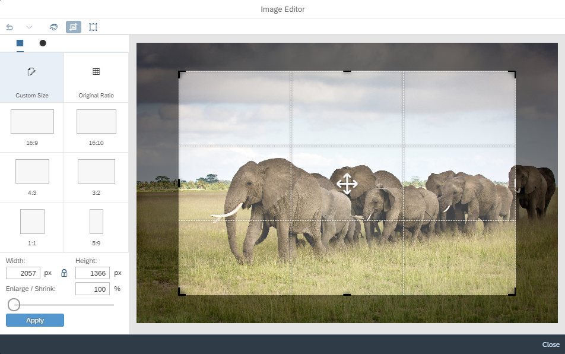

The
new The control's functionality is also exposed through an API and can be triggered programmatically. For more information, see the API Reference and the samples.  |
|
SAPUI5 OData V4 Model The new version of the SAPUI5 OData V4 model introduces the following features:
Restriction
Due to the limited feature scope of this
version of the SAPUI5 OData V4 model, check that all required features are in place
before developing applications. Check the detailed documentation
of the features, as certain parts of a feature may be missing.
While we aim to be compatible with existing controls, some
controls might not work due to small incompatibilities compared
to For more information, see OData V4 Model, the API Reference, and the Samples. |
|
Support for New Era in the Japanese Calendar Starting May 1, 2019, SAPUI5 supports a new era in the Japanese calendar, due to the imperial transition. |
|
We have introduced three new properties:
|
|
Gantt chart 2.0 can now be exported to PDF. You can export the entire chart as a single-page document or spread the chart across multiple pages, depending on the media type that you choose. For more information, see the API Reference. |
|
The options list used in these controls is now instantiated
lazily. The list is created primarily based on user interaction.
As a result of the change, the initialization time of the
controls has decreased significantly. For more information, see the samples ( |
|
You can now change the date range value using keyboard combinations without opening the calendar. When the cursor is on the start date (before the delimiter), we change the start date and when it is on the end date (after the delimiter), we change the end date.
For more information, see the Sample. |
We
have adjusted the value state text for the
|
|
You can now switch the background and text colors using the new
|
|
To be better aligned with the other input controls, we have
implemented a new |
|
|
|
We have introduced the |
|
|
| General Features SAP Fiori 3 user experience is now enabled for all SAP Fiori elements-based applications by default. Object Page The InsertRestriction property can now be passed as a property for the navigation leading to the sub-entity. For more information, see Defining and Adapting Sections. |
|
OData V2 Messaging Documentation The OData V2 Messaging documentation has been enhanced and improved. See Error, Warning, and Info Messages. |